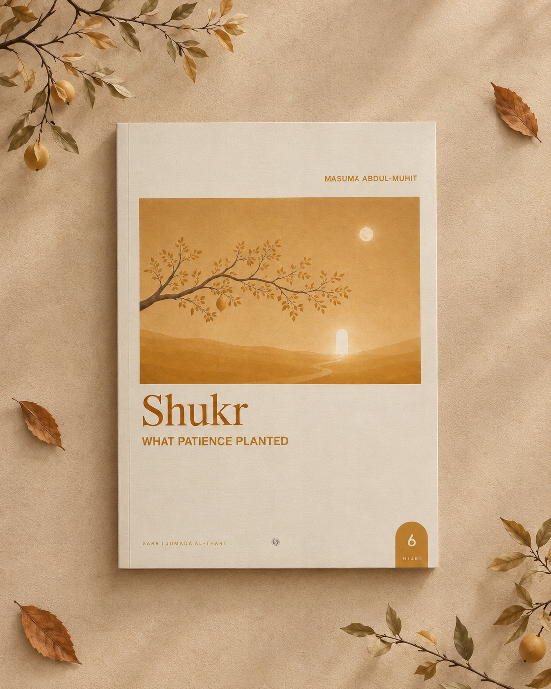
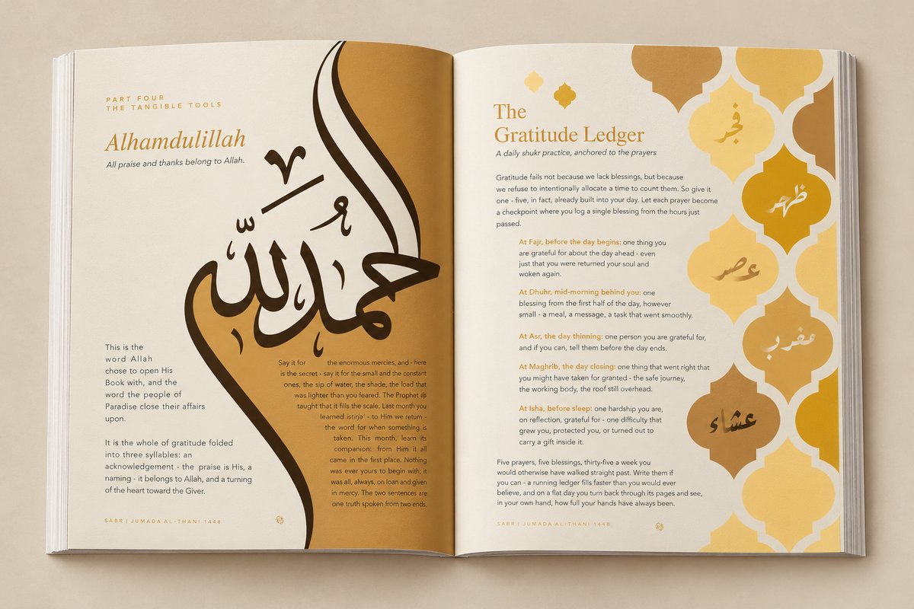
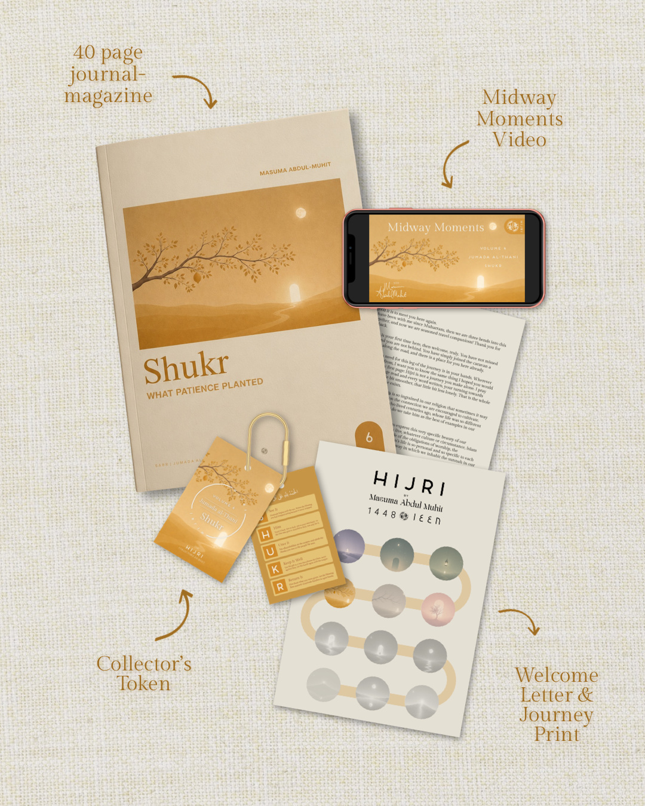
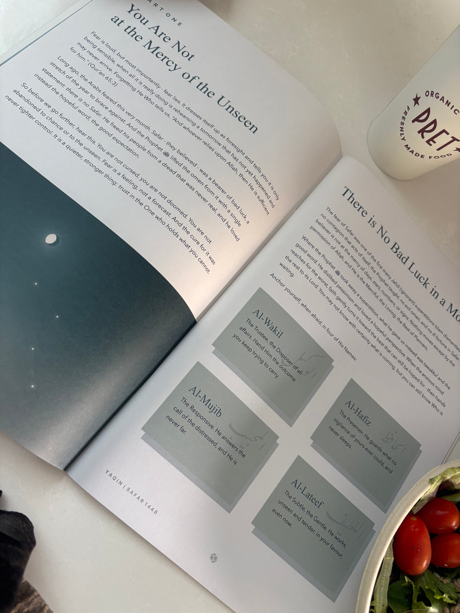

The 40-Page A4 Magazine
Articles on the month’s spiritual theme written in light of the Qur’an, Sunnah and classical scholars of the heart — authored by a qualified Aalimah and life coach and verified by scholars.
One meaningful theme each lunar month, explored through Qur’anic reflection, classical scholarship and guided journaling — printed on 40 A4 pages and posted to your door, sans the screen.



In a world of fleeting notifications and digital noise, Hijri was made to be held in your hands — read slowly with a warm cup of tea, annotated in the margins, and returned to throughout the lunar month.
Articles on the month’s spiritual theme written in light of the Qur’an, Sunnah and classical scholars of the heart — authored by a qualified Aalimah and life coach and verified by scholars.
Self-accounting (muhasabah) prompts, the signature Whisper reflection pages, a dhikr to carry, and a gentle daily/weekly rhythm with no streaks or guilt.
A welcome letter, a journey print mapping all twelve lunar months, and a physical Collector’s Token bearing the month’s word to unlock milestone rewards at 4, 8 and 12 volumes.
Halfway through the lunar month, readers receive access to an exclusive mid-month video reflection from Masuma to check in with your heart and renew your intentions.
“What Patience Planted”
Volume 6 explores Shukr — gratitude: the quiet, active seeing that reveals the life you already have as full, long before anything new arrives. It is the other half of faith, the harvest after the long wait.
Through Qur’anic reflection, the wisdom of the classical scholars of the heart, guided journaling and small daily practices, this volume walks you through the season of thanks: to see the favours that have gone invisible because they never failed you, and to trace every gift back to its Giver.
“Shukr is not the arrival of more, but the opening of your eyes to how much was always, extravagantly, here. You are not behind. You are in abundance.”
Designed for busy lives — as little as a few quiet minutes with your tea. No streaks, no guilt, and no catching up if you miss a day.
Join before the monthly pre-order window closes on the 12th. Delivery is free worldwide, and you can pause, skip a month, or cancel anytime.
Pre-orders close on the 12th of each month, and your limited-edition print volume is dispatched within 7–12 working days to your door.
40 A4 pages of Qur'anic reflection, classical scholarship and guided journaling. Collect a token with every volume and unlock rewards at 4, 8 and 12.
Halfway through the month, readers receive a short exclusive video from Masuma to revisit the theme, check in with your heart, and go deeper.
The Collector’s Journey isn’t about collecting magazines. It’s about collecting moments of transformation. Every volume carries its own physical keepsake — a Collector’s Token bearing that month’s word to clip to a bag, keep on a desk, or return to often.
“You were never meant to arrive all at once. You were meant to keep walking.”

The Wayfarer is the one who has answered the call to begin. Four collected volumes mark the first stage of the journey: a commitment to pause, reflect, and take intentional steps towards Allah. This tier represents courage, direction, and the willingness to start.
“Every journey begins with a single step.”
The Traveller has chosen to continue the path. Eight collected volumes represent perseverance, consistency, and a heart that continues seeking despite the distance still ahead. This tier honours those who keep returning, reflecting, and growing through every season.
“You've chosen to keep going, to keep seeking, to keep growing.”
The Companion has journeyed through the complete Hijri cycle. Twelve collected volumes signify steadfastness, reflection, and companionship on the path to Allah. This final tier recognises those who have walked the full journey and become keepers of its lessons.
“You've travelled the full path, and are a keeper of this sacred journey.”
Every volume of Hijri turns on a single word. This is where we tell the fuller story behind it — the history, the meaning, and why it might be just what your heart needs this month.
My children and I have a daily practice; we do our morning adhkar, then we thank Allah for as many random things we can think of — learning to see the life we already have as full.
Read EssaySabr asks you to stay rooted through the dryness, certain of water you cannot yet see. You are not asked to enjoy the waiting. You are asked to wait with Him.
Read EssayTired of meeting the same fault in the mirror? Tazkiya is the quiet work of purifying the heart — one weed pulled, one good thing watered, at a time.
Read Essay
“I didn’t want a faith that only came alive twice a year. I wanted a rhythm — something gentle, rooted, and tangible — that could hold the heart steady through all twelve months of the lunar calendar.”
My name is Masuma Abdul-Muhit. I spent over a decade studying and teaching the classical Islamic sciences (Aalimiyyah), and today I work as a life coach specialising in women’s wellbeing, success, and family life.
I created Hijri because I found myself drifting through the year, a little lost in the quiet months between Ramadan and Dhul Hijjah. Hijri was born at the meeting point of my two worlds — timeless sacred knowledge and the lived, everyday realities of the modern Muslim — reviewed alongside qualified scholars so what reaches your hands is both authentically rooted and written from the heart.
Everything you need to know about subscribing, delivery and how Hijri works.
Our small team is always happy to assist with subscriptions, address changes, or token rewards.
Contact Us (info@shophijri.com)Pre-orders close on the 12th of each month, and your volume is dispatched within 7–12 working days after that date. UK orders are sent by Royal Mail 2nd Class, so allow up to 4 days from dispatch for it to reach your door.
Yes. You can pause or cancel your subscription at any time through your account or by getting in touch with us. Just make the change before the 12th of the month so it takes effect before your next volume is prepared.
Yes. Delivery is included in the price on every order, in the UK and internationally.
Yes. Single volumes (£14.99) are available to order while the monthly pre-order window is open. Once the window closes on the 12th, that volume is not available for single purchase again, though limited archive copies of select earlier issues may occasionally appear in our 1448 Archive.
Because every volume is made to order, we don't offer refunds or exchanges and all sales are final. Your subscription itself can be paused or cancelled at any time for future volumes.
Every volume comes with a physical Collector's Token bearing that month's theme. As you collect tokens across the Hijri year, you move through three tiers — The Wayfarer (4 volumes), The Traveller (8 volumes), and The Companion (12 volumes) — unlocking exclusive milestone gifts along the way.
Walk through the Islamic lunar year one month, one spiritual theme, and one quiet turning of the heart at a time — with 40 A4 pages of reflection, classical wisdom, and guided journaling posted to your door.
Clean, modular, and conversion-focused. Balanced two-column compositions, native Shopify section blocks, and structured subscription journeys.